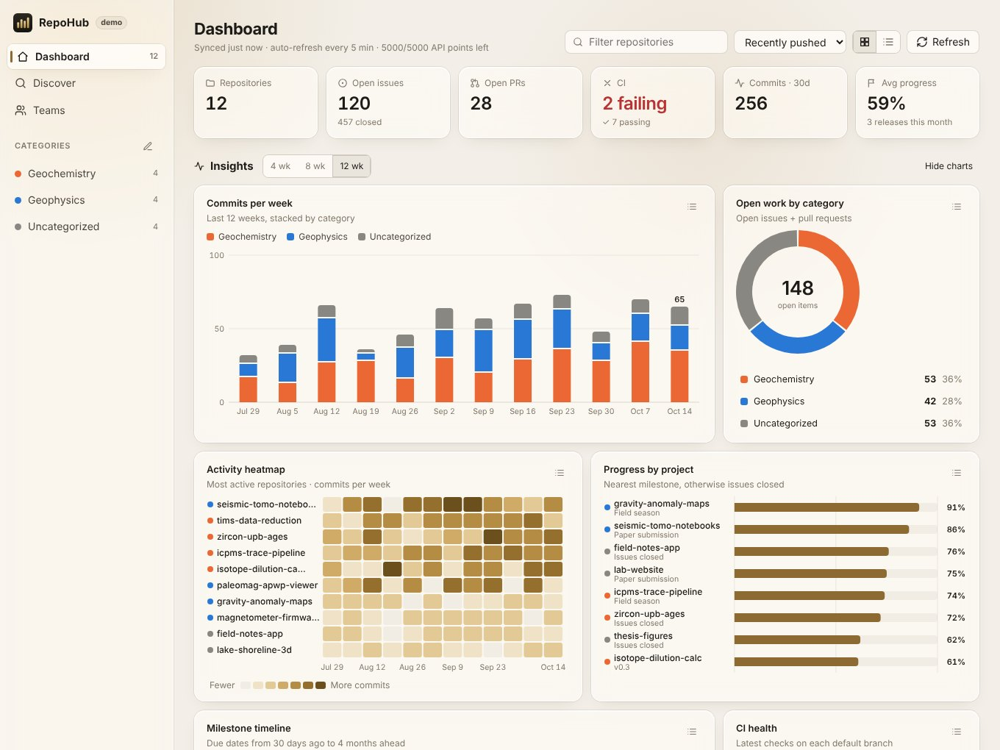

RepoHub is a fast, lightweight dashboard for your GitHub repositories. It shows milestones, issues, pull requests, CI and commits, keeps itself up to date, and lives in your menu bar.

Made in a geoscience lab, where code, field data, papers and instruments all live in different repositories.
Milestone completion, issues closed, open and merged PRs, CI status, latest release and 12-week commit activity, refreshed in the background.
Stacked weekly commits, an activity heatmap, progress rankings, open work by category, a milestone timeline and CI health. Each chart also has a table view.
Starts with Geochemistry and Geophysics. Add, rename and recolor categories as you like, and keyword rules sort repos into them automatically.
Search GitHub by topic, filtering for maintained, licensed and well-starred projects. Track them next to your own repos.
RepoHub reads each project's own logo or icon file. Private repos work too, and you can override any icon.
Ivory & Brass, Glacier & Slate, Basalt & Copper and seven more, each with light and dark modes, on frosted glass.
Download the installer for macOS or Windows from Releases, or build from source by double-clicking Install RepoHub.command.
Click one button. GitHub opens in your browser with a one-time code that's already on your clipboard. Approve, and you're in.
Your repos sort themselves into categories. Pin favorites, track projects you find in Discover, and pick a theme.
repo, to read progress on your private repositories, plus read:org and read:user for organizations and your profile. RepoHub only reads; it never changes your repositories.